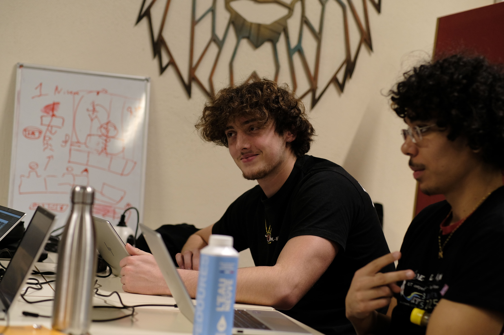

Code Game Jam 2025 & 2026
Événement

Contexte du projet
Ces deux projets ont été réalisés dans le cadre de Game Jam organisées à l’IUT, où des équipes d’étudiants disposent d’environ 32 heures pour concevoir un jeu vidéo complet à partir d’un thème imposé.
Lors de la première édition, en 2025, notre équipe de quatre personnes devait créer un jeu autour du thème « Mélodie à l’infini ». Nous avons choisi de développer un jeu de plateforme dans lequel la progression et l’ambiance s’inspiraient de la musique et du rythme.
En 2026, nous avons participé à une seconde Game Jam avec le thème « Fête des clics ». Nous avions initialement imaginé un jeu de survie en 2D où le joueur devait cliquer sur des ennemis dans une ambiance festive. Cependant, le temps passé à configurer et prendre en main l’environnement de développement nous a contraints à revoir notre ambition initiale. Nous avons finalement réorienté le projet vers un clicker game, inspiré de jeux comme Cookie Clicker, afin de proposer une expérience jouable et cohérente dans le temps imparti.
Ces deux expériences ont été réalisées en équipe de quatre étudiants, avec une organisation rapide des tâches afin d’aboutir à un prototype fonctionnel avant la fin du temps imparti.
Contribution personnelle
Lors de la Game Jam 2025, j’ai principalement travaillé sur la gestion des mouvements du personnage, notamment la logique des déplacements, des sauts et les interactions avec l’environnement. J’ai également participé à l’implémentation des collisions ainsi qu’à l’intégration de certaines textures du personnage afin d’assurer une cohérence visuelle dans le jeu.
Lors de la Game Jam 2026, j’ai davantage contribué aux mécaniques de progression du jeu, en développant le système d’améliorations ainsi que la mécanique de renaissance (reset avec bonus) permettant au joueur de recommencer la partie tout en conservant des avantages. J’ai également participé activement aux phases de test et d’équilibrage, en analysant le comportement du jeu et en proposant des ajustements afin d’améliorer l’expérience globale.
Ce que j’ai appris
Ces deux Game Jam m’ont permis de découvrir et d’expérimenter le développement de jeux vidéo dans un contexte de temps très limité.
Lors de la première édition, j’ai notamment découvert le moteur de jeu Godot, sa structure basée sur les nœuds et les scènes, ainsi que la gestion des entrées utilisateur et des collisions.
La seconde Game Jam m’a permis de renforcer mes compétences en JavaScript, notamment à travers la conception de mécaniques de progression et de systèmes d’amélioration typiques des jeux de type clicker.
Au-delà des aspects techniques, ces expériences m’ont surtout appris l’importance de l’organisation et de la communication dans un projet en équipe, ainsi que la capacité à adapter rapidement un projet lorsque des contraintes techniques ou de temps apparaissent. Elles m’ont également sensibilisé à l’importance du prototypage rapide et de l’itération, essentiels dans le développement de jeux vidéo.
Traces du Projet